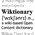

Wikipedia is a free encyclopedia accessible over the Internet in which everyone can participate. It concerns thousands of topics. To help you dive into this very rich content, see the Wikipedia page.
Where to start?
You are now using an offline version of Wikipedia in Simple English. Other related project are also included.
Why ? It's not always an easy task to access the Internet ; in many countries, slow connections makes browsing annoying. With this offline version, access to a computer is sufiscient to enjoy the informations and knowledge from Wikipedia and its satelite projects.
Enter a word in the search engine (at the top) or use the links provided by this page to access the various informations present here. Please, consult the help page if you need asistance.
Other Wikimedia projects
- Wikiquote
 Wikibooks
Wikibooks-  Wiktionary
A compendium of quotations from notable people.
A collection of open-content textbooks.
A dictionary that uses simple words so it is easier to understand.
Applied Sciences
Agriculture (growing crops) - Architecture (buildings) - Communication - Electronics - Engineering - Health - Industry - Medicine - Transport - Weather
People and Social Studies
Anthropology (study of people) - Archaeology (history of civilization) - Geography - Education - History - Language - Philosophy (abstract ideas) - Psychology - Sociology - Teaching
Daily life, Art and Culture
Animation - Art - Book - Cooking - Custom - Culture - Dance - Family - Games - Gardening - Leisure (free time) - Movies and films - Music - Radio - Sports - Theater - Travel - Television
Natural Sciences and Maths
Algebra - Astronomy (stars and space) - Biology (animals and plants) - Chemistry - Computer science - Earth science - Ecology - Geometry - Mathematics - Physics - Statistics - Zoology (study of animals)
Government and Law
Copyright - Defence - Economics (trade and business) - Government - Human rights - Laws - Military - Politics - Trade
Religions and beliefs
Atheism - Bahá'í - Buddhism - Christianity - Esotericism - Hinduism - Islam - Jainism - Judaism - Mythology - Paganism - Sect - Sikhism - Taoism - Theology